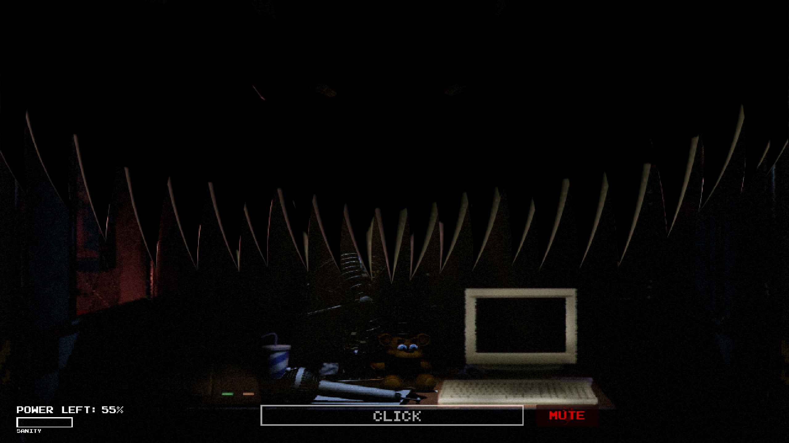
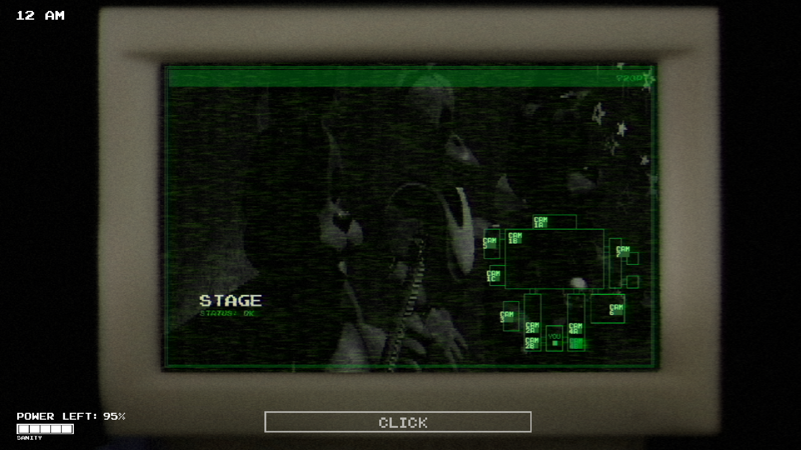
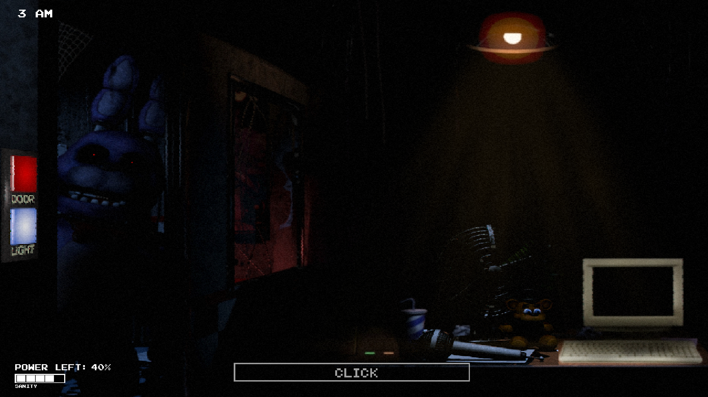

FIVE NIGHTS IN DARKNESS
Fanmade basado en Five Nights At Freddy's 1
Five Nights in Darkness
Five Nights in Darkness es nuestro primer fanmade inspirado en el universo FNAF, creado con pasión y detalle para ofrecer una experiencia intensa e inmersiva de terror psicológico.
Adéntrate en un entorno oscuro y misterioso donde cada decisión cuenta. Con una ambientación cuidada, sonidos inquietantes y una jugabilidad clásica con toques innovadores, este juego te pondrá a prueba toda la noche.
Características del juego
Estilo clásico, esencia nueva
Un homenaje a FNAF 1 con nuevas mecánicas que aportan frescura y estrategia.
Atmósfera inmersiva
Sonidos, luces y diseño visual pensados para generar tensión y mantenerte alerta.
Desarrollado con amor
Todo el proyecto ha sido creado por fans y para fans. Gracias por formar parte de esta aventura.